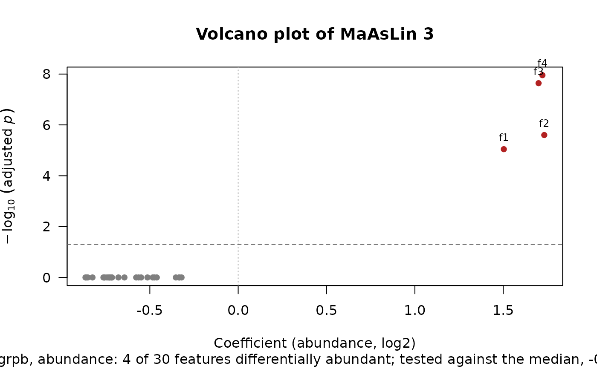
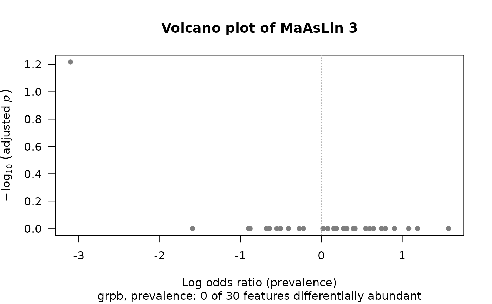

Tests each feature for association with the covariates of a model, twice (Nickols et al. 2026): its abundance where it is present (a linear model of its log2 relative abundance, zeros left out) and its prevalence (a logistic model of whether it is present). Abundance coefficients are tested against the median coefficient over all features (the median comparison), which turns a change in relative abundance into a statement about absolute abundance when the typical feature doesn't change. A joint p-value combines the two models. A port of maaslin3 1.4.0.
Usage
maaslin3(
counts,
formula = NULL,
data = NULL,
groups = NULL,
margin = 1L,
norm = "percent",
transform = "log",
standardize = TRUE,
augment = TRUE,
median_comparison_abundance = TRUE,
median_comparison_prevalence = FALSE,
median_comparison_abundance_threshold = 0,
median_comparison_prevalence_threshold = 0,
subtract_median = FALSE,
warn_prevalence = TRUE,
small_random_effects = FALSE,
n_sims = 10000L,
alpha = 0.05,
p_adjust = "holm",
seed = 0L,
cpus = n_cpus()
)Arguments
- counts
A numeric matrix of non-negative abundances (samples \(\times\) features), counts or proportions, or any of the objects listed under Input Types. A value of 0 means the feature is absent.
- formula
The model, a one-sided formula over the columns of
data, such as~ status + age, or the same as a string. Anythingstats::model.matrix()accepts may be used. Every factor (and character or logical column) is coded with treatment contrasts, its first level (in sorted order, or a factor's own order) the reference. One random intercept may be added, as in lme4:~ status + age + (1 | subject)(see Repeated measures).NULL(the default) is~ groups.- data
A data frame of sample metadata, with the variables of
groupsorformula. Its rows are matched to the samples ofcountsby name when both have names, else by position.- groups
The term of interest (a fixed effect): with
formula, the name of one of its terms (the oneplot()shows by default); alone, the name of a column ofdataor a vector with one value per sample, and the model is~ groups.- margin
The margin containing samples.
1if samples are rows,2if samples are columns. Ignored whencountsis a special object class (e.g.phyloseq). Default:1- norm
How abundances are normalized for the abundance model:
'percent'(the default; each sample's values divided by its total, maaslin3's'TSS'),'rclr'(log ratios to the geometric mean of the sample's non-zero values, natural log; maaslin3's'CLR'), or'none'. Zeros are left out of the abundance model in every case.- transform
'log'(the default): \(\log_2\) of the normalized values; or'none'.'log'can't be used withnorm = 'rclr', whose values are logs already.- standardize
TRUE(the default, as maaslin3) to centre and scale every numeric variable offormulato unit standard deviation before fitting, so that their coefficients are per standard deviation;FALSEfor coefficients per unit.- augment
TRUE(the default, as maaslin3) to fit the prevalence model to augmented data, which keeps its estimates finite when a covariate separates the samples where a feature is present from those where it is absent (see The prevalence model).- median_comparison_abundance, median_comparison_prevalence
Whether to test each model's coefficients against their median over the features (see The median comparison), rather than against 0. Defaults
TRUEfor abundance andFALSEfor prevalence, as maaslin3.- median_comparison_abundance_threshold, median_comparison_prevalence_threshold
A coefficient within this distance of the median gets a p-value of 1 in the median comparison (divided by the standard deviation of the design column when it isn't 0/1). Default
0.- subtract_median
TRUEto report the coefficients of a model with a median comparison minus that median;FALSE(the default) for the coefficients as fitted.- warn_prevalence
TRUE(the default, as maaslin3) to flag prevalence associations that a stronger abundance association in the same direction may have caused (see Flags). Needstransform = 'log'and anormother than'rclr'.- small_random_effects
With a random intercept,
TRUEto fit the prevalence model with its grouping as a fixed effect instead (as maaslin3's option of that name), which is better when the groups have few samples each (fewer than about 4). DefaultFALSE.- n_sims
The number of Monte Carlo draws for the median comparison's covariances. Default
10000, as maaslin3.- alpha
The significance level for
reject,reject_abundanceandreject_prevalence(maaslin3'smax_significance). Default0.05(maaslin3:0.1).- p_adjust
How to adjust the p-values for testing many features and covariates: any method of
stats::p.adjust()('holm', the default, as ecodive's other DA methods;'BH', as maaslin3;'hochberg','hommel','bonferroni','BY','fdr','none'). The abundance and prevalence p-values are adjusted together, as one family; the joint p-values separately.- seed
An integer seed for the median comparison's Monte Carlo draws. Default
0.- cpus
How many parallel processing threads should be used. The default,
n_cpus(), is the CPU cores this R process may use, within any limits set on it. Results are the same for anycpus.
Value
A data frame of class c('ecodive_maaslin3', 'data.frame') with
a row per feature and covariate (every design column but the
intercept), in the order of counts:
feature,covariate: the feature's name (or its index as text), and the design column, asstats::model.matrix()names it ('statusmoderate','age').coef_abundance,se_abundance: the abundance model's coefficient (log2 fold change in relative abundance where present, with the defaultnormandtransform) and its standard error.dof_abundance: its degrees of freedom: the residual's, or with a random intercept Satterthwaite's.null_abundance: the value it was tested against: the median, with a median comparison, else 0.p_abundance,q_abundance: its p-value and adjusted p-value.coef_prevalence,se_prevalence,null_prevalence,p_prevalence,q_prevalence: the same for the prevalence model (log odds ratios; Wald z-tests).n_nonzero: the number of samples where the feature is present.flag_abundance,flag_prevalence: maaslin3's error or warning for the fit, orNA(see Flags).p_value,p_adjusted: the joint p-value of the two models and its adjustment.reject:TRUEwhen the joint adjusted p-value is at mostalpha, or either model's is (and that model has no flag): maaslin3's significant associations.reject_abundance,reject_prevalence: each model's own decision (adjusted p-value at mostalpha, no flag).
Values that can't be estimated are NaN. Attributes: method
('maaslin3'), formula, groups (the term of interest, or NULL),
design (the model matrix, standardized), random (with a random
intercept: its grouping variable), norm, transform, alpha,
p_adjust, log_base (of the abundance coefficients: 2 with
transform = 'log', exp(1) with norm = 'rclr', else NA), and
per feature (named by feature) mean (its mean transformed abundance
where present), prevalence (the proportion of samples where it is
present), resid_sd (the abundance model's residual standard
deviation) and, with a random intercept, random_sd (the abundance
model's random intercepts' standard deviation). plot() draws volcano,
MA, forest and rank plots of either model
(plot.ecodive_maaslin3()).
Details
The abundance model. For each feature, its values are normalized
(norm), its zeros set aside, and the rest transformed (transform);
then a linear model of formula is fitted by least squares to the
samples where the feature is present, and each coefficient tested with
a t-test. A feature whose non-zero values are all the same (or that has
none) is flagged "All linear values are the same"; one present in no
sample at a factor's reference level, "No data points have the baseline
factor level"; one present at a single level of a factor, "contrasts can
be applied only to factors with 2 or more levels". Their abundance
results are NaN. A design column that is constant among a feature's
samples can't be estimated, and gets NaN with the flag "Fitting error
(NA p-value returned from fitting procedure)".
The prevalence model. Each feature's presence (1) or absence (0) is
fitted to formula by logistic regression over all samples
(iteratively reweighted least squares, as stats::glm()), and tested
with Wald z-tests. With augment = TRUE the data are augmented first
(Nickols et al. 2026): every sample twice more, once present and once
absent, each copy with weight \(p / (2n)\) (\(p\) the number of
design columns besides the intercept, \(n\) the samples), which keeps
the estimates finite under separation. A feature present in every sample
or in none is flagged "All logistic values are the same". glm()'s
warnings become flags: "glm.fit: algorithm did not converge" (25
iterations), "glm.fit: fitted probabilities numerically 0 or 1
occurred".
The median comparison. If most features don't change in absolute
abundance, the coefficients of relative abundance cluster around the
shift that the composition puts on all of them, so each coefficient
\(\hat\beta_j\) is tested against their median \(m\) over the
features whose own p-value is below 0.95: \(t_j = (\hat\beta_j -
m)/\sqrt{se_j^2 + v_m - 2 c_j}\), with \(v_m = \frac{\pi}{2}\,
\mathrm{var}(\hat\beta)/n\) the median's asymptotic variance and \(c_j\)
its covariance with \(\hat\beta_j\), estimated from n_sims Monte
Carlo draws of every coefficient from \(N(\hat\beta_j, se_j^2)\). The
t-test has the model's degrees of freedom (the normal distribution for
prevalence). It is on by default for abundance only. Turn it off
(median_comparison_abundance = FALSE) for absolute abundances, such as
those of qmp_scale(), or when many features are expected to change in
the same direction.
The joint p-value. For each feature and covariate, \(p =
1 - (1 - \min(p_{abundance}, p_{prevalence}))^2\) (the distribution of the
smaller of two independent uniform p-values, pbeta(p, 1, 2)), or the
p-value of the model that has one without a flag; adjusted with
p_adjust over all features and covariates.
Flags. Besides the fitting problems above, as maaslin3:
A prevalence coefficient larger than 15 in absolute value, or a p-value below \(10^{-10}\), of a feature present in under 5\ the samples (and fewer than 50), or absent from under 5\ than 50), is flagged as a likely misfit.
With
warn_prevalence: a prevalence association in the same direction as a stronger abundance association (of log2 proportions, without a median comparison) whose adjusted p-value is belowalphais flagged "Prevalence association possibly induced by stronger abundance association": a feature whose abundance drops can fall below detection in more samples. The flag leaves the prevalence p-value out of the joint p-value and out ofreject_prevalence.With a random intercept whose groups have fewer than 4 samples on average, the prevalence rows are flagged "<4 average observations per random effect group often inflates coefficients and deflates p-values: consider setting small_random_effects=TRUE and see tutorial". This flag alone doesn't stop a rejection.
A flag other than these two leaves the model's p-value out of the adjustments.
Repeated measures. With (1 | id) in formula, both models get a
random intercept for each value of id (a subject, say). The abundance
model is a linear mixed model fitted by restricted maximum likelihood
(REML), as lme4's lmer(), with Satterthwaite's degrees of freedom, as
lmerTest; ecodive finds the REML optimum exactly (see linda()). The
prevalence model is a logistic mixed model fitted by the Laplace
approximation, as lme4's glmer(), minimised over the random
intercept's standard deviation and the coefficients by Newton's method;
its standard errors are those of glmer (from the criterion's Hessian, or
for a singular fit, whose standard deviation is below \(10^{-4}\),
from the penalized least squares). With few samples per group, consider
small_random_effects = TRUE.
Differences from maaslin3. The results are those of maaslin3 1.4.0 with its filters off (to about \(10^{-10}\); the median comparison's p-values to about \(10^{-8}\), the precision of the numerical t integral maaslin3 uses), when its median comparison's draws are given (see Computation), except that:
Every feature is reported. maaslin3's filters (
min_abundance,min_prevalence,max_prevalence,min_variance) aren't ported: filtercountsfirst. Even with them off, maaslin3 leaves out features with fewer than two non-zero values or all non-zero values equal (itsmin_variance = 0), and withnormalization = 'CLR'those whose CLR values are all at most 0; here they are kept, and enter the adjustments and the median comparison through the model they have.The median comparison's draws come from PCG streams (
seed), not R's random numbers, so its p-values agree with maaslin3's to Monte Carlo error (about 1\p_adjustdefaults to'holm'andalphato0.05(maaslin3:'BH'and0.1).Factor levels: a factor's own order, else sorted in the C locale; maaslin3 requires
referencefor a variable of more than two levels that isn't a factor.Missing values in
dataare an error (maaslin3 leaves those samples out of each fit).Of maaslin3's model terms, one random intercept,
(1 | id); notgroup(),ordered()orstrata()terms, random slopes or several random effects. Not ported either:feature_specific_covariate,unscaled_abundance, contrast tests,evaluate_only, the plots and files,zero_threshold(zero is absent), and thePLOGtransform (with zeros set aside it equalsLOG).Mixed models are fitted at their exact optimum; lme4's optimizers stop a little short (maaslin3 keeps the first optimizer's fit that gives no warning), so results differ from maaslin3's by about \(10^{-6}\) for abundance and \(10^{-4}\) to \(10^{-3}\) for prevalence, more where glmer's first optimizer stops early on a flat criterion. lme4's convergence warnings, which maaslin3 turns into flags, aren't reproduced; a prevalence fit that doesn't converge here is flagged "The mixed model did not converge".
The result is one data frame, a row per feature and covariate with both models side by side (maaslin3: a table per model, sorted by q-value).
Computation. The table is read by feature from its sparse form, and
the features are fitted in parallel C, each from its own samples, so
results are identical for any number of cpus. The median comparison
draws each Monte Carlo draw from its own PCG stream (keyed by seed,
the model, the covariate and the draw), and sums the covariances in
blocks of draws in a fixed order.
Input Types
The counts parameter is designed to accept a simple numeric matrix, but
seamlessly supports objects from the following biological data packages:
phyloseqrbiomSummarizedExperimentTreeSummarizedExperiment
For large datasets, standard matrix operations may be slow. See
vignette('performance') for details on using optimized formats
(e.g. sparse matrices) and parallel processing.
References
Nickols, W. A., Kuntz, T., Shen, J., et al. (2026). MaAsLin 3: refining and extending generalized multivariable linear models for meta-omic association discovery. Nature Methods, 23(3), 554-564. doi:10.1038/s41592-025-02923-9
Mallick, H., Rahnavard, A., McIver, L. J., et al. (2021). Multivariable association discovery in population-scale meta-omics studies. PLoS Computational Biology, 17(11), e1009442. doi:10.1371/journal.pcbi.1009442
Bates, D., Maechler, M., Bolker, B., & Walker, S. (2015). Fitting linear mixed-effects models using lme4. Journal of Statistical Software, 67(1), 1-48. doi:10.18637/jss.v067.i01
Kuznetsova, A., Brockhoff, P. B., & Christensen, R. H. B. (2017). lmerTest package: tests in linear mixed effects models. Journal of Statistical Software, 82(13), 1-26. doi:10.18637/jss.v082.i13
Examples
# 40 samples, 30 features; f1 to f4 are more abundant in group b,
# and f5 is more often absent there.
set.seed(1)
x <- matrix(rpois(40 * 30, 8) * rbinom(40 * 30, 1, 0.7), 40, 30)
colnames(x) <- paste0('f', 1:30)
meta <- data.frame(
grp = rep(c('a', 'b'), each = 20),
age = round(runif(40, 20, 60)) )
x[21:40, 1:4] <- x[21:40, 1:4] * 5
x[21:40, 5] <- x[21:40, 5] * rbinom(20, 1, 0.2)
res <- maaslin3(x, ~ grp + age, meta, groups = 'grp')
res
#> # A data.frame: 60 × 21
#> # MaAsLin 3
#> feature covariate coef_abundance se_abundance dof_abundance null_abundance
#> <chr> <chr> <dbl> <dbl> <dbl> <dbl>
#> 1 f1 grpb 1.5 0.208 24 -0.611
#> 2 f1 age 0.129 0.117 24 0.0403
#> 3 f2 grpb 1.73 0.196 21 -0.611
#> 4 f2 age -0.0798 0.095 21 0.0403
#> 5 f3 grpb 1.7 0.15 28 -0.611
#> 6 f3 age 0.0187 0.0735 28 0.0403
#> 7 f4 grpb 1.72 0.14 28 -0.611
#> 8 f4 age -0.206 0.0761 28 0.0403
#> 9 f5 grpb -0.763 0.4 13 -0.611
#> 10 f5 age 0.0658 0.124 13 0.0403
#> # … 50 more rows
#> # … 15 more columns: p_abundance <dbl>, q_abundance <dbl>, coef_prevalence <dbl>,
#> # se_prevalence <dbl>, null_prevalence <dbl>, p_prevalence <dbl>,
#> # q_prevalence <dbl>, n_nonzero <int>, flag_abundance <chr>,
#> # flag_prevalence <chr>, p_value <dbl>, p_adjusted <dbl>, reject <lgl>,
#> # reject_abundance <lgl>, reject_prevalence <lgl>
#> # Use print(x, n = ...) to see more rows
#> # Attributes: method, formula, groups, design, norm, transform, alpha,
#> # p_adjust, log_base, mean, prevalence, resid_sd
plot(res)

plot(res, model = 'prevalence')

# As maaslin3's defaults would give it.
maaslin3(x, ~ grp + age, meta, p_adjust = 'BH', alpha = 0.1)
#> # A data.frame: 60 × 21
#> # MaAsLin 3
#> feature covariate coef_abundance se_abundance dof_abundance null_abundance
#> <chr> <chr> <dbl> <dbl> <dbl> <dbl>
#> 1 f1 grpb 1.5 0.208 24 -0.611
#> 2 f1 age 0.129 0.117 24 0.0403
#> 3 f2 grpb 1.73 0.196 21 -0.611
#> 4 f2 age -0.0798 0.095 21 0.0403
#> 5 f3 grpb 1.7 0.15 28 -0.611
#> 6 f3 age 0.0187 0.0735 28 0.0403
#> 7 f4 grpb 1.72 0.14 28 -0.611
#> 8 f4 age -0.206 0.0761 28 0.0403
#> 9 f5 grpb -0.763 0.4 13 -0.611
#> 10 f5 age 0.0658 0.124 13 0.0403
#> # … 50 more rows
#> # … 15 more columns: p_abundance <dbl>, q_abundance <dbl>, coef_prevalence <dbl>,
#> # se_prevalence <dbl>, null_prevalence <dbl>, p_prevalence <dbl>,
#> # q_prevalence <dbl>, n_nonzero <int>, flag_abundance <chr>,
#> # flag_prevalence <chr>, p_value <dbl>, p_adjusted <dbl>, reject <lgl>,
#> # reject_abundance <lgl>, reject_prevalence <lgl>
#> # Use print(x, n = ...) to see more rows
#> # Attributes: method, formula, design, norm, transform, alpha, p_adjust,
#> # log_base, mean, prevalence, resid_sd
# Two samples from each of 20 subjects: a random intercept per subject.
meta$subject <- rep(sprintf('s%02d', 1:20), 2)
maaslin3(x, ~ grp + age + (1 | subject), meta, groups = 'grp')
#> # A data.frame: 60 × 21
#> # MaAsLin 3
#> feature covariate coef_abundance se_abundance dof_abundance null_abundance
#> <chr> <chr> <dbl> <dbl> <dbl> <dbl>
#> 1 f1 grpb 1.54 0.192 13.6 -0.661
#> 2 f1 age 0.125 0.122 19.5 0.0403
#> 3 f2 grpb 1.73 0.194 14.5 -0.661
#> 4 f2 age -0.0783 0.0959 14.9 0.0403
#> 5 f3 grpb 1.7 0.15 28 -0.661
#> 6 f3 age 0.0187 0.0735 28 0.0403
#> 7 f4 grpb 1.72 0.14 28 -0.661
#> 8 f4 age -0.206 0.0761 28 0.0403
#> 9 f5 grpb -0.745 0.394 6.07 -0.661
#> 10 f5 age 0.062 0.125 12.3 0.0403
#> # … 50 more rows
#> # … 15 more columns: p_abundance <dbl>, q_abundance <dbl>, coef_prevalence <dbl>,
#> # se_prevalence <dbl>, null_prevalence <dbl>, p_prevalence <dbl>,
#> # q_prevalence <dbl>, n_nonzero <int>, flag_abundance <chr>,
#> # flag_prevalence <chr>, p_value <dbl>, p_adjusted <dbl>, reject <lgl>,
#> # reject_abundance <lgl>, reject_prevalence <lgl>
#> # Use print(x, n = ...) to see more rows
#> # Attributes: method, formula, groups, design, random, norm, transform, alpha,
#> # p_adjust, log_base, mean, prevalence, resid_sd, random_sd